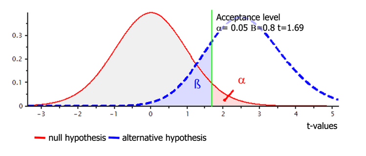
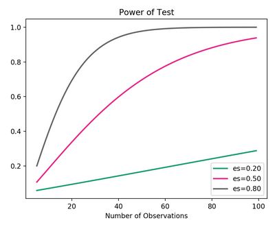

6 Null hipotézis szignifikancia tesztelés
Következtetéses statisztika célja a populációra való következtetés a minta alapján
Több statisztikai hipotézis tesztelő keretrendszer is létezik
frekventista:
A hipotézis állandó (vagy igaz vagy nem) és az adatok véletlenszerűek
Frekventista inferencia az adatok előfordulásának valószínűségére fókuszál a hipotézis fényében
A frekventista módszerek közül legtöbbször a null hipotézis szignifikancia tesztelést (NHST) használják a kutatók
Bayesiánus:
a hipotézis valószínűségéről is el tud mondani valamit az előzetes tudásunk és az adatok fényében
gyakran használt hipotézis tesztelő módszere a Bayes factor
két hipotézis valószínűségének az arányát fejezi ki az adatok fényében
az érdeklődőknek további olvasmányok:
6.1 Null hipotézis szignifikancia tesztelés
A fejezet során a példa kutatásunkban a statisztika oktatók IQ-ját fogjuk vizsgálni
Előzetes kutatáskból tudjuk, hogy a populációban az átlago IQ 100 amelyhez egy 15-ös szórás tartozik
6.1.1 Lépései
Megfogalmazunk egy alternatív hipotézist
A hipotézisünknek lehet iránya (egyoldalú hipotézis tesztelés)
Pozitív vagy negatív kapcsolatot várunk el
Egy oldalú hipotézis tesztelésnek is nevezik
Például: A statisztika oktatók IQ-ja magasabb, mint 100
Vagy lehet kétoldalú hipotézis teszt
- Ebben az esetben az alternatív hipotézisünk csak azt várja el, hogy a lesz lesz különbség a vizsgált változók között, de az nem mondjuk meg milyen irányú különbséget várunk el
- Például: A statisztika oktatók IQ-ja különbözik 100-tól
- 100 alatti és 100 feletti értékeket is elvárunk
Azt, hogy melyik hipotézist alkalmazzuk az elmélet (előzetes tudásunk) határozza meg
Megfogalmazzuk a null hipotézist
- Egyoldalú hipotézis esetén a null hipotézis feltételezi, hogy az alternatív által prediktált iránnyal ellenkező előjelű különbséget kapunk vagy nem lesz különbség
- Feltételezzük, hog a null hipotézis igaz!
- Például: A statisztika oktatók IQ-ja kisebb vagy egyenlő 100-al
- Abban az esetben ez a nullhipotézis, hogyha egy irányú alternatív hipotézisünk van
A hipotézis tesztelésére alkalmas adatokat gyűjtünk
Például: IQ tesztet töltetünk ki statisztika oktatókkal
Tegyük fel, hogy az adatgyűjtés után a mintánkat így írhatjuk le:
30 résztvevő (N = 30)
IQ átlag (M) = 118.5
IQ variancia (SD2) = 42.25
IQ szórás (SD) = 6.5
Kérdés: Ez a véletlen műve vagy tényleg magasabb a statisztika oktatók IQ-ja, mint az átlagé?
Az alternatív hipotézisünket leíró statisztikai modellt illesztjük az adatokra
Célunk: az alternatív hipotézis mellett szóló evidencia számszerüsítése az adatokban található variancia ellenében
Példa: Kiszámolhatjuk az átlagot a statisztika oktatók IQ pontszámaira
A modell illesztése során kiszámoljuk a teszt statisztikát
Kiszámoljuk a teszt statisztikát
- A teszt statisztikára gondolhatunk úgy, mint a vizsgált hatás mértetének mutatója az adatokban található variancia fényében
tehát teszt statisztika = modell által megmagyarázott variancia / modell által meg nem magyarázott variancia
máshogy, teszt statisztika = hatás / hiba
Minél nagyobb a teszt statisztika annál nagyobb a modell által megmagyarázott variancia a hibához képest
- Példa: Amikor a minta átlagot hasonlítjuk a populáció átlaghoz, akkor egymintás t-próbát lehet alkalmazni, aminek teszt statisztikája a t érték
t érték = (Mminta - Mpopuláció) / SD / SQRT(N)
Példa: t-statisztika: 118-100/1.19 = 15.13
- A teszt statisztikára gondolhatunk úgy, mint a vizsgált hatás mértetének mutatója az adatokban található variancia fényében
Megvizsgáljuk, hogy milyen valószínűséggel kapnánk ilyen vagy ennél extrémebb teszt statisztikát, ha a null hipotézis igaz
Ehhez egy valószínűségi eloszlást használunk, ami megmutatja, hogy a null hipotézis alatt, milyen valószínűségeket várnánk el az egyes teszt statisztika értékekhez
Ehhez általában egy elméleti eloszlást használnuk, ami illik a vizsgált teszt statisztikához
- Például t tesztnél a teszt statisztika a t érték, és t-eloszlást használnuk
Az így kiszámolt valószínűség a p-érték
A folyamatot ábrázolva a Figure 6.1 ábrán láthatod (Pernet (2015))
Példa: A t értékünk 15.13 volt és a szabadságfok n-1 = 29, így a p érték kisebb, mint .00001 lesz
Értelmezzük az eredmények statisztikai szignifikanciáját
A p-értéket fogjuk használni arra, hogy eldöntsük elég meglepőek-e az adataink ahhoz, hogy elvessük a null hipotézist
Ehhez egy döntési kritériumot kell használnunk, amit a szignifikancia küszöbérték
- Az ehhez tartozó valószínáségi görbe alatti terület az alpha
Fontos megjegyezni, hogy nem tudhatjuk, hogy a döntés, hogy elvetjük a null hipozétist helyes vagy helytelen döntés-e egy adott esetben!
- Vagy egyik vagy a másik nem rendelhetünk mellé valószínűséget!
Így egyedül azt tudjuk megmondani, hogyha ilyen vagy ennél extrémebb adatokat kaptunk hosszútávon, ha végtelenszer megismételjük a kísérletet és ugyanezt a döntési kritériumot (alphat) használjuk, akkor az esetek hány százalékában fogunk hibásan dönteni
A Figure 6.1 ábrán egy oldalú teszthez tartozó szignifikancia régiót láthatunk, amit az alpha jelöl, a hozzá tartozó kritkikus érték, azaz a szignifikancia küszöb pedig t = 1.69-nél van
Ha kétoldalú hipotézis tesztet csinálnánk az alpha-t elosztanánk kettővel 0.05/2=0.025 és a null hipotézishez tartozó eloszlás mindkét végén jelölnénk
Így a kritikus t értékünk is megváltozna, illetve kettő lenne belőle, egy negatív és egy pozitív
Példa: A kapott p érték kisebb, mint a szignifikancia küszöb így elvetjük a null hipotézist, ami szerint a statisztika oktatók IQ-ja egyenlő vagy kisebb 100-nál
6.1.2 Szignifikancia küszöb
Nincs objektíven helyes küszöbérték!
Hagyományosan a szignifikancia küszöb 0.05
Az alpha = 0.05 azt mondja meg, hogyha végtelenszer megismételjük a kutatást hosszútávon 5% az esélye annak, hogy egyes fajú hibát követünk el
Ez azonban csak tradíció kérdése
Pár éve megjelent két cikk is, ami a szignifikancia küszöb újragondolására bíztat
Az egyik amellett érvel, hogy hozzunk érveket amellett, hogy melyik szignifikancia küszöböt választjuk
- Ez azonban nehéz feladat
A másik amellett érvel, hogy használjunk egy konzervatívabb küszöbértéket alapértelmezettként, ami legyen 0.005
- Emögött az a feltételezés áll, hogy a 0.05-ös küszöbérték mellett a nullhipotézissel szembeni evidencia gyenge
6.1.3 Mit értünk helyes döntés alatt?
Négy lehetséges kimenetel létezik:
Elvetjük a nullhipotézist, amikor az valóban hamis
Nem vetjük el a nullhipotézist, amikor valójában igaz
Elvetjük a nullhipotézist, pedig az valójában igaz (egyes fajú hiba)
Nem vetjük el a nullhipotézist, amikor az valójában hamis (kettes fajú hiba)
A kettes fajú hiba előfordulásának gyakoriságát a béta küszöbértékkel tudjuk kontrollálni
- Általában 0.2 azaz 20%
Ha az adataink kellő mértékben valószínűtlenek a null hipotézis fényében, akkor elvetjük azt és az alternatív hipotézist megtartjuk
Ha nem elég valószínűtlenek az adatok, akkor nem tudjuk elvetni a nullhipotézist
- Ebben az esetben nem tudhatjuk, hogy a populációban valóban nem létezik a hatás vagy csak nem volt elég érzékeny a mérőeszközünk a detektálására!
6.1.4 Többszörös tesztelés
Ha többször teszteljük ugyanazokat az adatokat a p érték devalválódik
Nem az egyes tesztekre kell kontrollálni a hibát, hanem a tesztek egész családjára
- Ezt nevezzük family wise error rate-nek
Ezt különböző statisztikai módszerekkel tudjuk kontrollálni
- A legalapvetőbb a Bonferroni korrekció ahol elosztjuk az alphát a tesztek számával
Részben ez magyarázza, hogy miért nem lehet az NHST alatt többszörösen tesztelni: azaz megnézni az eredményt újabb adatokat gyűjteni majd megint tesztelni
Hosszutávon a p érték biztosan szignifikáns lesz
- Mert a nagy elemszám miatt a szórás annyira kicsire csökken, hogy kis különbséget is szignifikánsnak fogunk találni
6.2 Hatásnagyságok
A statisztikai szignifikancia nem feltétlenül jelent valós szignifikanciát
Példa: egy szívritmus szabályozó gyógyszer hatékonyságának vizsgálatánál kaphatunk szignifikáns különbséget, amikor összehasonlítjuk azon résztvevők szívritmusát akik kaptak az új gyógyszerből azokéval, akik csak placebót kaptak
- ettől függetlenül, ha a gyógyszer klinikailag nem értelmezhető módon csökkenti a szívritmus gyakoriságát (mondjuk egy gyógynövényből készült tea hatékonyságával ér fel) a gyógyszercég nem fog pénzt költeni az új gyógyszer piacra dobására
A hatásméret (effect size) annak a számszerűsített mutatója, mennyire erős egy összefüggés, vagy mennyire nagy a különbség két csoport között
Vannak nyers hatásméret mutatók
Amik ugyanazt a skálát használják, mint az adatok
Különböző skálákon mért hatásméretek így nem összehasonlíthatók
Azonban a hatás valós szignifikanciájának értelmezése könnyebb velük!
Példa: A minta átlagunk 118.5 volt, így a nyers hatásmérték 118.5-100=18.5
És standardizált hatásméret mutatók
Lehetővé teszi az összehasonlítást!
- Lásd: metaanalízis
Két család:
Csoportok közötti különbségekre
- Cohen’s d
- Példa: A nyers hatásmértéket elosztjuk a szórással, tehát a standardizált hatásnagysága a statisztika oktatók IQ-ja és az átlag IQ közti különbségnek Cohen’s d = 2.84
Változók közötti összefüggésre
- Korreláció, odds ratio, risk ratio
6.3 Mintaméret és annak becslése
Mintaméret: az egymástól független megfigyelések száma
Befolyásolja a statisztikai erőt: annak valószínűsége, hogy megtaláljuk a hatást, amennyiben az a valóságban is létezik
- A kettes fajú hiba inverze
Negatív eredmények esetében fontos a statisztikai erő
- Különben nem tudjuk megmondani hogy valóban nem létezik a hatás vagy csak nem volt elég nagy a mintánk, hogy egy ekkora hatást észleljünk (nem volt elég érzékeny a mérésünk)
A szükséges mintaméret becslést az NHST alatt a priori mintaméret becsléssel végezzük
Az a priori azt jelenti, hogy csak akkor van értelme a mintaméret becslésnek, ha az az adatok gyűjtése és a statisztikai teszt elvégzése előtt történt
Ezután vagy megtaláltuk a hatást vagy nem, a kérdés el van döntve
Olyan a post hoc mintaméret becslés mintha azután próbálnánk meg kiszámolni, hogy mennyi üzemanyag kell egy repülőbe ahhoz, hogy átrepüljünk vele az óceán felett, miután már megtörtént a repülés. A gép vagy lezuhant vagy nem
Ehhez kell az elvárt hatásméret, a kívánt statisztikai erő, a szignifikancia küszöb, a kutatási elrendezés
Minél kisebb az elvárt hatás annál nagyobb mintára lesz szükségünk, hogy észleljük
- Lásd: Figure 6.2 (Bakker et al. (2016))
Az elvárt hatásméret megbecslésére számos módszer van
Használhatunk pilot kutatást
Támaszkodhatunk a szakirodalomban előzetesen talált hatásméretekre
- Azonban itt lehetséges, hogy a publikált hatásméretek torzítanak!
Elméleti alapon is meghatározhatjuk a számunkra releváns legkisebb hatást
- smallest effect size of interest (SESOI)
- melyik az a legkisebb hatás, ami számunkra még érdekes lehet

6.4 A null-hipotézis szignifikancia tesztelés gyakori félreértései és a mögöttük álló okok
Az NHST használatával és értelmezésével kapcsolatban sok a félreértés a gyakorlott kutatók között is
Ez nagyban hozzá tud járulni a tudományos eredmények replikálhatatlanságához és az így kialakult replikációs válsághoz
A félreértéseknek többek közt statisztika történeti okai is vannak
A módszer kidolgozása Ronald Fisher-hez és Jerzy Neyman-hoz illetve E. S. Pearson-hoz köthető
Fisher nem értett egyet Neyman-Pearson-nal
A köztük lévő vita időnként igen elmérgesedett
A most használt NHST módszer a két megközelítés keveréke
- Valószínűleg egyik megközelítés képviselői sem értenének egyet vele!
A következőben pár gyakori félreértelmezését fogjuk megvizsgálni az NHST logikának és feltárjuk a mögöttük álló okokat is
6.4.1 Mennyire valószínű, hogy igaz az alternatív hipotézisünk, ha a p-érték kicsi?
Olvashatjuk azt cikkekben, hogy mivel a p-érték a szignifikancia határ alatt volt, ezért valószínű hogy igaz az alternatív hipotézisünk.
Ez azonban helytelen.
Az NHST nem mond semmit a H0 vagy H1 valószínűségéről, hanem a kapott adatok valoszinusegevel foglalkozik (abbol a feltetelezesbol kiindulva, hogy a H0 igaz).
Könnyű összekeverni annak a valószínűségét hogy mennyire valoszínűek a kapott adatok a hipotézis fényében P(D|H) azzal hogy mennyire valószínű a hipotézis a kapott adatok fényében P(H|P)
Egy hipotézis vagy igaz vagy hamis
- Nem lehet egy obejktív valószínűséget rendelni egy hipotézishez az NHST alatt
Fontos tudni, hogy nem felcserélhetők az állítások! Egy kondicionális valószínűség P(A|B) inverze nem feltetlenül egyenlő a kondicionális valosínűséggel P(B|A)
Példa:
Ha leharapta egy ember fejet egy cápa mennyire valószínű, hogy halott? 1
Ha valaki halott, akkor mennyire valószínű hogy leharapta a fejét egy cápa? Nem tudjuk, ~0
- Ehhez el kell osztani az összes meghalt ember számát azokéval akik azért haltak meg mert leharapta a fejük egy cápa
Dienes (2008)
Tanulság: mit mondhatunk el akkor ha a p értékünk kicsi? Annyit, hogy ha a null hipotézist igaznak vesszük akkor meglepő ilyen adatot kapni
6.4.2 Ha a kutatásomban kiszámolt teszt statisztikához tartozó p érték nagyon kicsi akkor a talált hatás nagyobb, mintha nagyon nagy lenne a p-érték?
Nem
A p érték hatásméret mutatóként való értelmezése gyakori a publikált irodalomban és Fisher korai írásainak téves értelmezésének következménye
A p érték nagysága függ többek között a mintaméret nagyságától és a mérőeszköz pontosságától. Így ha a mintaméret nagy és/vagy a mérőeszköz pontos, akkor kis hatásméret mellett is kaphatunk kis p értéket és fordítva.
Részben ebből következik, hogy a p-érték nagyságából nem következtethetünk a talált hatás fontosságára sem.
- Példa: Ha a vérnyomáscsökkentő klinikailag elhanyagolható mértékben csökkenti a vérnyomást, de a szignifikancia küszöböt átlépi a p értékünk, attol még nem fog egy gyógyszercég milliárdokat költeni a gyógyszer piacra dobására
6.4.3 Ha kicsi p ertek miatt elvetem a nullhipotézist, akkor mennyire lehetek biztos abban (mekkora az evidencia) hogy az alternatív hipotézis igaz?
Nem következtethetünk a p-értékből az evidencia méretére
Ahogy korábban is már említettük a p-érték nem a hipotézisre vonatkozik
Ezen felül egy igen kicsi p-értéket nem értelmezhetjük úgy hogy több evidenciánk van arra, hogy igaz az alternativ hipotézis
- Ez a szakirodalomban sokszor úgy jelenik meg hogy: szignifikánsabb eredményt találtunk vagy a kapott eredmény nagyon szignifikáns
Amennyiben a valóságban a nullhipotézis az igaz, a p-értékek eloszlása uniform eloszlást követ (x tengellyel párhuzamos az eloszlás)
Tehát ugyanannyi nagyon kicsi p-értéket fogunk kapni mint nagyon nagyot hosszú távon
Így egyetlen kutatásból kapott p-érték nagysaga alapjan semmit nem tudunk elmondani arrol, hogy mennyire valoszinu az adott hipotezis
Amennyiben a valosagban az alternativ hipotezis az igaz, a p ertekek eloszlasa a szignifikancia kuszob korul fog csucsosodni de nagy p ertekek tovabbra is elofordulhatnak
Reszben ez az eszrevetel inspiralta a p-curve hasznalatat
A p curve azt mutatja meg hogy egy adott hatas vizsgalata soran milyen eloszlast kovetnek a kapott p ertekek
A p curve hasznalata a gyakorlatban azonban sokszor ugyancsak felrevezeto lehet
Egyik feltetele ugyanis, hogy a kutatok az osszes meres eredmenyet lekozlik, fuggetlenul attol, hogy szignifikans volt-e az eredmeny vagy nem
Azonban az NHST rituale hasznalatanak egyik kovetkezmenye a fiok hatas
A fiok hatas azt jelenti hogy a kutatok szelektiven kozlik kutatasi eredmenyeik, hajlamosabbak a szignifikans eredmenyeket lekozolni, a nem szignifikans eredmenyek azonban a fiokban maradnak
Fontos azonban megjegyezni hogy az NHST ritualevel kapcsolatos felreertesek nem csak a kutatok koreben elterjedtek, hanem a tudomanyos folyoiratok szerkesztoi koreben is
- Így egyes lapok hajlamosabbak nem leközölni a nem szignifikáns eredmenyeket
6.4.4 Ha a p-értékünk éppen a szignifikancia küszöb felett van (p = 0.06) akkor mondhatjuk, hogy marginálisan szignifikáns eredményeket kaptunk?
Szintén a p-érték evidencia mutatóként való értelmezése vezet a következő gyakran elkövetett téves értelmezéshez: marginálisan szignifikáns p-érték
A kutatók legtöbbször az arbitrális 0.05 szignifikancia küszöböt (alpha) hasznaljak
A szignifikancia küszöbhöz közeli nem szignifikáns p-értékeket sokszor marginálisan szignifikáns értékeknek nevezik, vagy szignifikáns tendenciáról beszélnek
Rosnow and Rosenthal (1989) híres mondása: “Surely God loves the .06 nearly as much as the .05” (p. 1277)
Az, hogy az alpha értékhez közelítő p-érték annak a jele, hogy a hatás igaz lehet, csak akkor áll fent, ha a hatás jelen van a populációban, míg ha nincs jelen, a p-értékek uniform eloszláslást követnek. Így körkörös érvelésbe kerülünk: a választ, magával a válasszal indokoljuk.
Újfent, a p-érték alapján az NHST keretben egy dichotóm döntést hozunk, egyetlen szerepe, hogy általa lássuk, hogy az általunk meghatározott hibahatáron belül vagy kívül esnek az adataink.
1985 és 2016 között 7 pszichológiai tudományos területen vizsgálta Olsson-Collentine, Van Assen, and Hartgerink (2019) a 0.05 és 0.1 közötti publikált p-értékeket, ezek közül csaknem 40 %-ot marginálisan szignifikánsként közöltek
A kutatók sokszor evidenciaként tekintenek a p-értékre.
Az is motiválhatja a kutatókat arra, hogy ilyen p-értékek esetén, próbáljanak értelmezésükben “közeledni” a szignifikáns p-értékhez, hogy az NHST keretben nemszignifikáns p-érték esetén nem lehet levonni semmilyen következtetést, így kutatásuk inkonkluzív marad.
6.4.5 Ha nagy a p értékem akkor igaz, hogy nem létezik a hatás?
Mostanra talán már látható, hogy miért nem a válasz a kérdésre
Egyik kutatásunkban azt vizsgáltuk hogyan értelmezik a kutatók a nem szignifikáns eredményeiket vezető pszichológiai lapokban es az esetek mekkora részében jelent ez tenyleg evidenciát a nullhipotézis mellett Aczel et al. (2018)
Többféle téves értelmezést találtunk az esetek 72%-ában
- Abban is volt különbség, hogy a mintára (⅔) (“Nem volt különbség a résztvevők között a intervenciós és a kontroll csoportban”) vagy a populációra (⅓) (“Nem volt hatása az intervenciónak”) fogalmazták meg az állítást, hogy nincs jelen a hatás az eredményük alapján
Ha nem szignifikáns eredményt kapunk, akkor nem tudhatjuk, hogy csak nem volt elég érzékeny a mérőeszközünk, vagy valóban nem létezik a hatás. Így csak annyit mondhatunk, hogy nem utasíthatjuk el a null hipotézist.
Ahogy mar tobbszor emlitettuk a frekventista statisztikai megkozelitessel nem tudjuk meghatarozni, hogy mennyi evidenciank van egy adott hipotezis mellett
Ehhez egy masik statisztikai megkozelitest a Bayesianus megkozelitest alkalmaztuk
Ezen iskolan belul az egyik gyakran hasznalt mutato a bayes factor ami megmutatja, hogy mennyire valoszinu a nullhipotezis az alternativ hipotezissel szemben
A bayes faktort relativ evidenciakent tudjuk ertelmezni
Ez azt jelenti, hogy egy kettes BF azt jelenti, hogy a ketszer valoszinubb az alternativ hipotezis, mint a null hipotezis
Bar relativ evidenciakent ertelmezehto a bf megis a kutatok szeretnek dontest hozni, ezert konvenciokat alakitottak ki, hogy hanyas bayes faktor jelent eleg jo evidenciat az egyik vagy a masik hipotezis mellett
- A peldaban a harmas bf-t lathatjuk, mint hatart
A bf masik jo tulajdonsaga, hogy meg tudja mondani azt is ha az adatok fenyeben nincs eleg bizonyitekunk arra, hogy a null vagy az alternativ hipotezis mellett dontsunk, ilyenkor az eredmenyek inkonkluzivak
Tovabbi adatokat gyűjthetnek
Az NHST logika szerint nem szignifikans eredmenynel nem tudjuk megmondani, hogy valoban nem letezik a hatas vagy csak nem eleg erzekeny a meroeszkozunk vagy nem eleg adatot gyujtottunk
Tovabba az ujboli teszteles ujabb adatok gyujtese utan torzitja az NHST alatt az eredmenyeink
- Ilyenkor az alpha szintet korrigalnunk kell
A teszt statisztikak es a hozzajuk tartozo szabadsagi fokok alapjan ki tudtuk szamolni a bf-et a nemszignifikans hatasokhoz
Azt talaltuk hogy sok esetben amikor a kutato azt mondta a p ertek alapjan, hogy nincs hatas valojaban az eredmenyei inkonkluzivak voltak
Egyes esetekben pedig az alternativ hipotezist tamogattak